Práctica 6.1 - Dockerización del despliegue de una aplicación Node.js
Introducción
En esta práctica vamos a Dockerizar una aplicación de Node.js que usa una BBDD PostgreSql para gestionar personas en un libro de direcciones.
Instalación
Primero necesitaremos instalar Docker en nuestra máquina para esto seguiremos los siguientes pasos:
-
Actualizar nuestro equipo:
-
Instalar dependencias necesarias para que Docker pueda ejecutarse:
-
Añadir la clave GPG del repositorio Docker:
-
Añadir el repositorio Docker
` sudo add-apt-repository "deb [arch=amd64] https://download.docker.com/linux/debian $(lsb_release -cs) stable" -
Actualizar la lista de paquetes
-
Instalar Docker
-
Comprobar que docker esta instalado:
- Y como podemos ver en la imagen de abajo tenemos la última versión de docker instalada en nuestro equipo
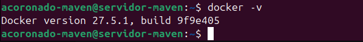
Despliegue con Docker
Una vez que hayamos completado la instalación de docker en nuestra máquina pasaremos a desplegar la aplicación de node.js
Para esto necesitaremos clonar el siguiente repositorio con la aplicación.
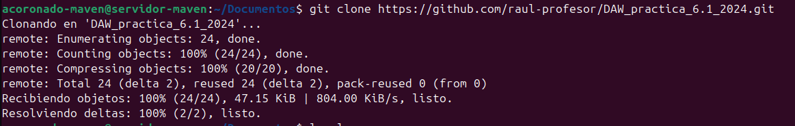
Como podemos observar si hacemos un listado de los archivos de la aplicación ya viene con el archivo Dockerfile
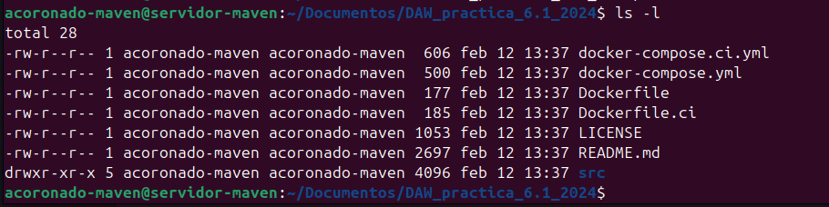
Aunque este viene incompleto, por lo que tendremos que rellenarlo para que funcione
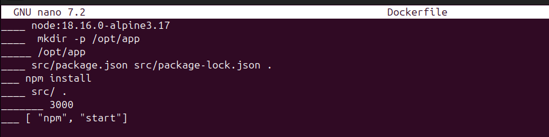
_____ node:18.16.0-alpine3.17
_____ mkdir -p /opt/app
_____ /opt/app
_____ src/package.json src/package-lock.json .
_____ npm install
_____ src/ .
_____ 3000
_____ ["npm", "run", "start:dev"]
Y una vez modificado y corregido quedaría así:
FROM node:18.16.0-alpine3.17
RUN mkdir -p /opt/app
WORKDIR /opt/app
COPY src/package.json src/package-lock.json .
RUN npm install
COPY src/ .
EXPOSE 3000
CMD [ "npm", "start"]
Ahora tendremos que hacer la build de la imagen de Docker. También le indicaremos que se llama librodirecciones y que haga la build usando el contexto del directorio actual, esto para que use el dockerfile que acabamos de editar.
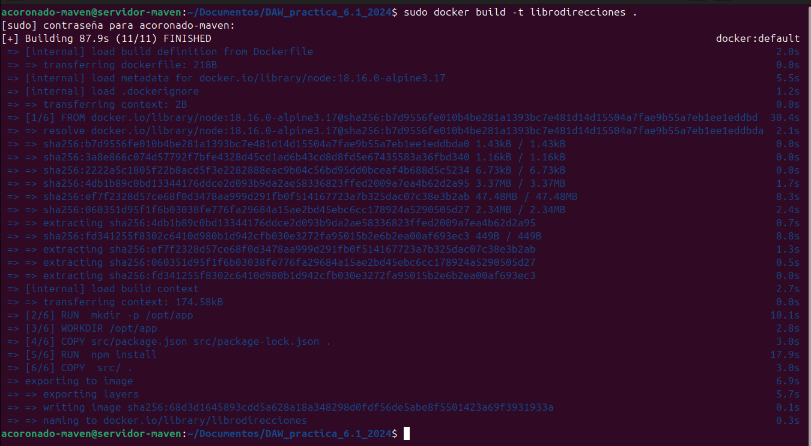
Y como podemos observar docker ha ido ejecutando cada uno de los pasos que hemos establecido anteriormente en el Dockerfile para montar la imagen de nuestra app.
A continuación iniciaremos el contenedor con nuestra aplicación. Pero con ciertos parámetros para que funcione correctamente, en este caso usaremos la opción -p, que indica que puerto de nuestra máquina tiene docker que escuchar para redirigirlo al puerto del contenedor.
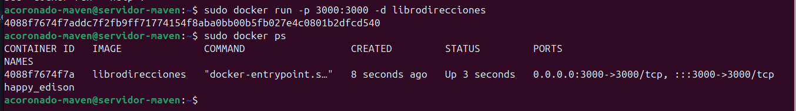
Tras esto comprobaremos que se puede acceder a la app desde el navegador de nuestra app.
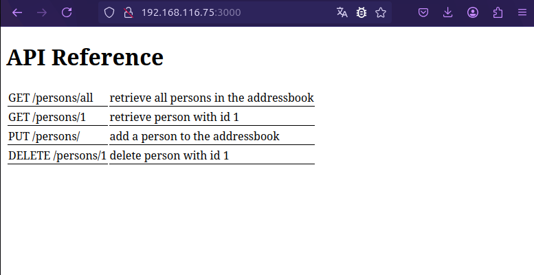
Aunque si intentáramos hacer un uso de la misma esta fallará, ya que no logra conectarse con la base de datos.
A pesar de que todos los contenedores corren en la misma máquina, cada uno es considerado un host diferente y por eso la aplicación falla al conectar.
Aquí es donde entra Docker compose el cual nos permitirá administrar los contenedores.
Docker Compose
Docker compose nos permite:
- Iniciar y detener múltiples contenedores en secuencia.
- Conectar contenedores utilizando una red virtual.
- Manejar la persistencia de datos usando Docker Volumes.
- Establecer variables de entorno.
- Construir o descargar imágenes de contenedores según sea necesario.
Docker compose usa un archivo yaml para escribir la configuración de la aplicación.
En este caso nosotros usaremos este archivo yaml para el correcto funcionamiento de nuestra aplicación.
version: "3.9"
services:
postgres:
image: postgres:latest
environment:
POSTGRES_USER: postgres
POSTGRES_PASSWORD: postgres
ports:
- '5432:5432'
volumes:
- addressbook-db:/var/lib/postgresql/data
addressbook:
build:
context: .
environment:
DB_SCHEMA: postgres
DB_USER: postgres
DB_PASSWORD: postgres
DB_HOST: postgres
depends_on:
- postgres
ports:
- '3000:3000'
volumes:
addressbook-db:
Atención
Es aconsejable que antes de seguir paremos el contenedor del apartado anterior, pues vamos a usar el mismo puerto 3000 para docker compose
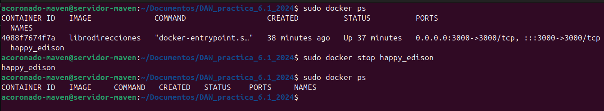
Ahora, tendremos que ejecutar los siguientes comandos:
Nota
El comando docker compose run nos permite ejecutar comandos sobre un servicio de docker compose
Este comando creará las tablas necesarias en la base de datos.
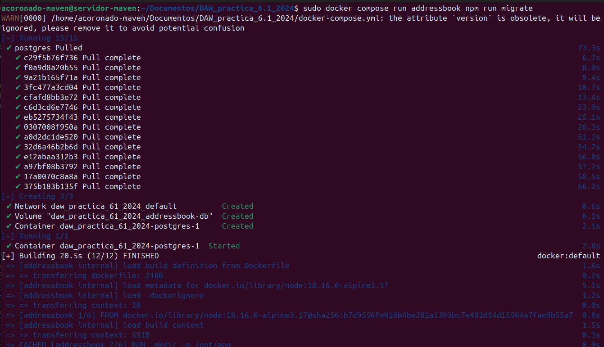
Ahora vamos a construir los contenedores a partir de las imágenes:
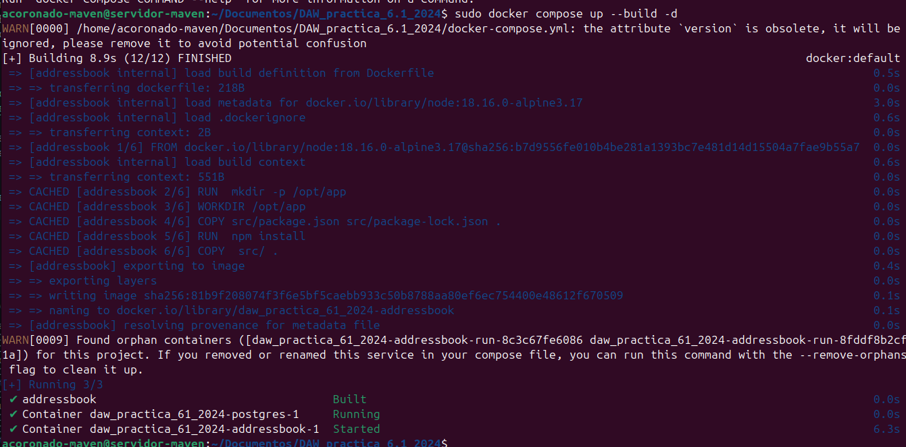
Y como se puede observar el contenedor ya está funcionando y se puede acceder a él.
Tarea
Probad que la aplicación junto con la BBDD funciona correctamente. El funcionamiento de la API es:
GET /persons/allmuestra todas las personas en el libro de direccionesGET /persons/1muestra la persona con el id 1PUT /persons/añade una persona al libro de direccionesDELETE /persons/1elimina a la persona con el id 1
Ejemplos:
Para hacer esta tarea usaré la herramienta postman para hacer uso de la API
-
Función put:

Como podemos ver, después de hacer el put, la aplicación nos devuelve los datos que hemos introducido en la base de datos junto al código 200 indicando que se han insertado correctamente.
-
Función GET /persons/1
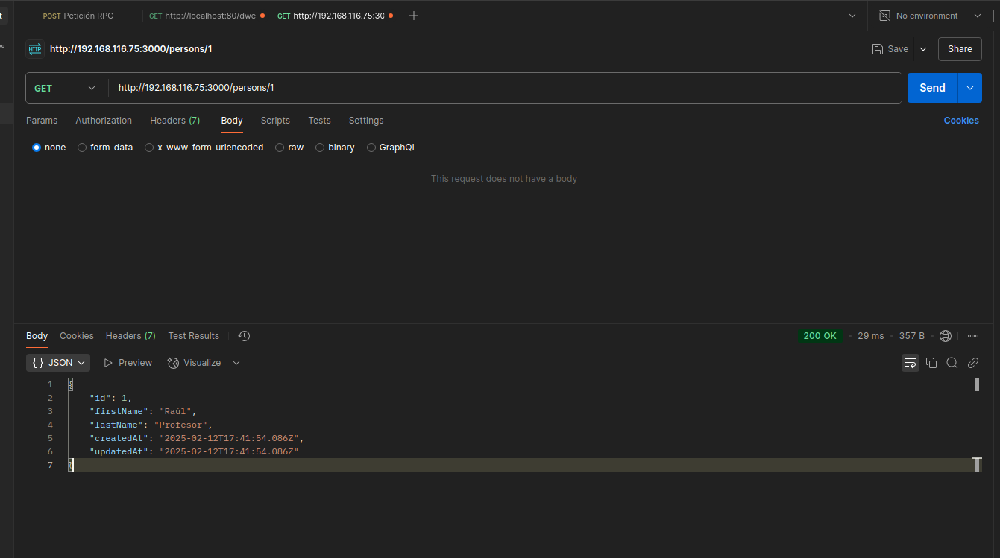
En este caso la aplicación nos devuelve la información de la persona con ID 1
-
Función GET /persons/all
Aquí la aplicación nos devuelve todas las personas que hay en la base de datos.
-
Y por último DELETE /persons/1
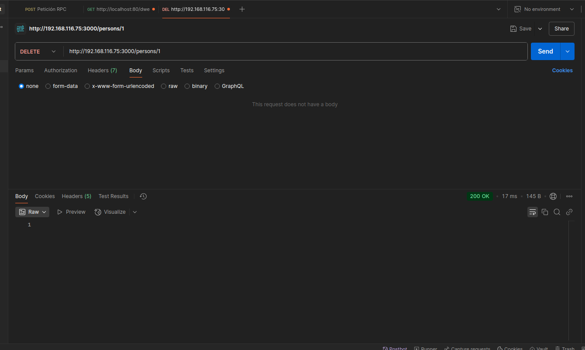
Esta petición como su nombre indica borrar a la persona con ID 1
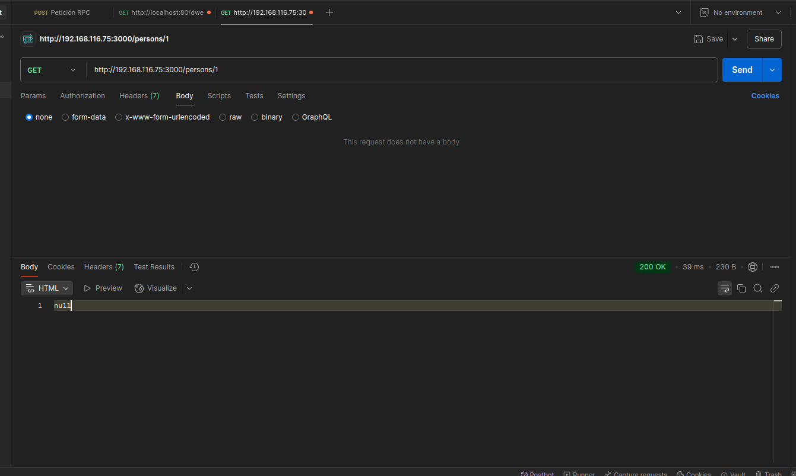
Y si volvemos a intentar acceder a la persona 1 podemos ver que devuelve null, indicando que se ha borrado exitosamente.